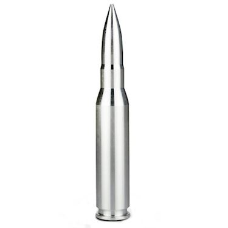

Project Excelsior - "Ever Higher"
Tuning an economy car is not a glamorous endeavour. It is a Sportsman mindset that evolves a passenger car
into something that is more capable than its initial design.
Knowing that power is not a full substitute for driving, the tuner must carefully select a modification
path that is performant, yet economical all whilst understanding the limitations of the platform. Handling and
agility must be
considered top priority. The overall reliability and utility functions must remain.
Case Study: Subaru Impreza Sport 2.0i - CVT
Overview:
- Chassis: GP7 - Steel Unibody - Subaru Impreza Hatchback 0.32 Cd
- Engine: FB20 - 2.0L Naturally Aspirated DOHC - DAVCS
- Transmission: TR580 - CVT with torque converter - 6 speed manual mode
- Drivetrain: Symmetrical AWD - electronic controlled transfer clutch
- Suspension: 4 Wheel Independent - MacPherson strut front - multi-link rear
- Brakes: 4 wheel disc
From a performance perspective, we must take into consideration the cars natural traits.
Strengths:
- Symmetrical AWD agility coupled with low CoG "boxer-style" engine
- Naturally Aspirated engine can be rev'd high
- CVT has good engine braking properties
- CVT has torque-surge capabilities
- Rear multi-link suspension can be tuned well
- Subaru are known to have interchangeable parts from higher-spec vehicles
- Relatively light curb-weight 3,109lbs
- Quick Ratio electronic steering
Known Weaknesses:
- FB20 engine has lack luster torque
- CVT is known to overheat under prolonged high loads
- Suspension is compliant and soft
- OEM Wheel package is economy class
- Brakes - lack thermal capacity
- Hatchback unibody/chassis have inherit flex
The sum of all the parts

No one upgrade or modification is the silver bullet when comes to tuning. When tuning, we amplify strengths and
offset platform weaknesses. We must take into consideration the whole car. In the following pages, we cover the
various parts of the platform.